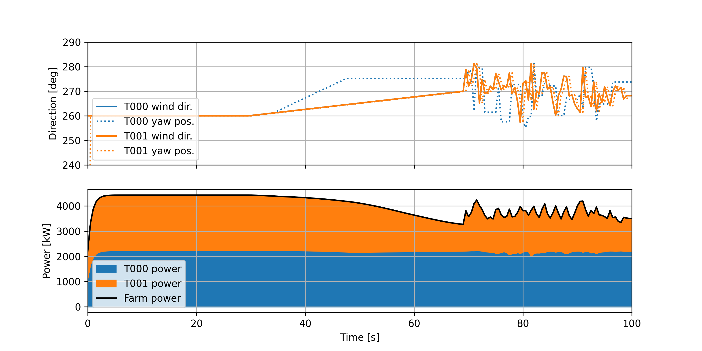
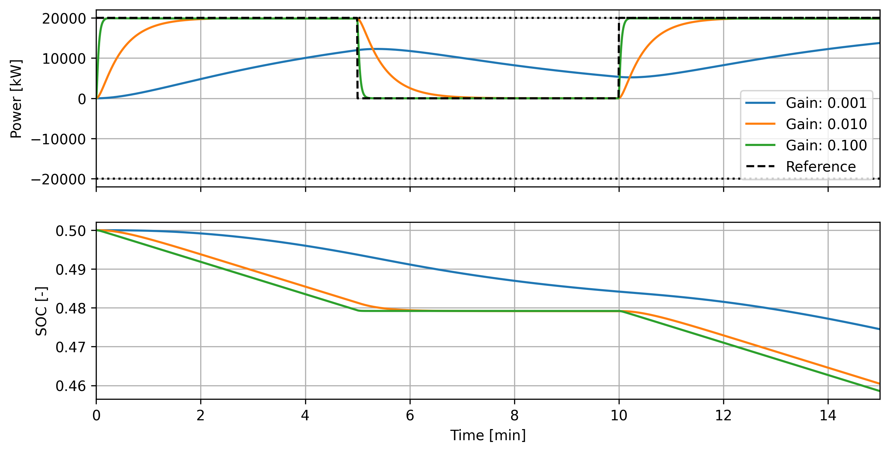
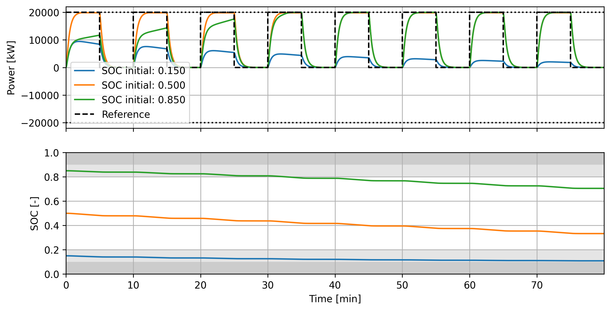
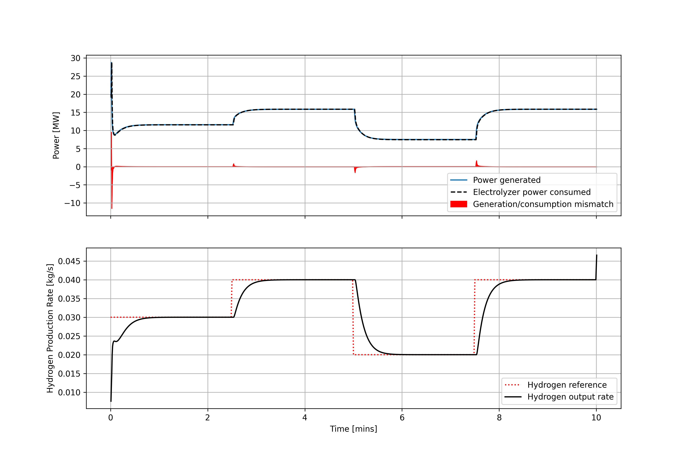

Examples#
The examples subdirectory contains a series of examples that can be run to test the functionality
of certain controllers and interfaces. Make sure you have installed Hercules
(see To run examples).
lookup-based_wake_steering_florisstandin#
2-turbine example of lookup-based wake steering control with LookupBasedWakeSteeringController, run using Hercules with the FLORIS standin in place of AMR-Wind for exposition purposes. To run this example, navigate to the examples/lookup-based_wake_steering_florisstandin folder and then run
bash run_script.sh
You will need to have an up-to-date Hercules installation (possibly on the develop branch) in your
conda environment to run this. You may also need to change permissions to run bash_script.sh as
an executable (chmod +x run_script.sh).
Running the script performs several steps:
It first executes construct_yaw_offsets.py, a python script for generating an optimized set of yaw offsets.
It then uses the constructed yaw offsets to instantiate and run the wake steering simulation.
The time series output is plotted in plot_output_data.py
This should produce the following plot:

Note that in construct_yaw_offsets.py, the minimum and maximum offset are defined as 25 and -25 degrees, respectively.
The example can also be run with hysteresis added to the yaw controller to mitigate large yaw
maneuvers near the aligned wind directions. To run with hysteresis, set use_hysteresis = True in
hercules_runscript.py. The simulation then produces the following plot:

Finally, an extra script is provided to compare various options for designing the wake steering look-up tables. This is run using
python compare_yaw_offset_designs.py
and compares the yaw offsets computed using the base approach; adding wind direction uncertainty; applying rate limits to the yaw offsets; and computing offsets for a single wind speed and extending to all operational wind speeds following a simple ramping heuristic.
wind_farm_power_tracking_florisstandin#
2-turbine example of wind-farm-level power reference tracking with WindFarmPowerTrackingController and WindFarmPowerDistributingController, run using Hercules with the FLORIS standin in place of AMR-Wind for exposition purposes. To run this example, navigate to the examples/wind_farm_power_tracking_florisstandin folder and execute the shell script run_script.sh:
bash run_script.sh
This will run both a closed-loop controller, which compensates for underproduction at individual
turbines, and an open-loop controller, which simply distributes the farm-wide reference evenly
amongst the turbines of the farm without feedback. The resulting trajectories are plotted,
producing:

simple_hybrid_plant#
Example of a wind + solar + battery hybrid power plant using the HybridSupervisoryControllerBaseline to track a steady power reference. The plant comprises 10 NREL 5MW reference wind turbines (50 MW total wind capacity); a 100MW solar PV array; and a 4-hour, 20MW battery (80MWh energy storage capacity).
To run this example, navigate to the examples/simple_hybrid_plant folder and execute the shell script run_script.sh:
bash run_script.sh
This will run a short (5 minute) simulation of the plant and controller tracking a steady power
reference. The resulting trajectories are plotted, producing:

along with some extra plots showing each of the components (wind, solar, and battery) in more detail.
Users may also try switching off the solar or battery components of the hybrid plant by setting
include_solar or include_battery to False in the hercules_runscript.py.
battery_control_comparison#
Small demonstration of the effect of different tunings in the BatteryController. This example consists of a simulation run entirely in python which can be executed using
python standalone_simulation.py
The simulation runs a simple battery-only example (using a battery model provided by
Hercules) where the battery is tasked with responding to a square wave power reference signal.
When the battery gain k_batt is increased, the closed-loop system response time decreases, as
shown here (produced by running the standalone_simulation.py script):

Moreover, a clipping_threshold sequence of `[0.1, 0.2, 0.8, 0.9] is used, indicating nullifying
the reference below 10% state of charge (SOC) and above 90% SOC; and linearly ramping the reference
between 10–20% and 80–90%. With this, providing a reference to the controller/battery system
produces a different response based on the initial SOC:

In particular, beginning near 50% SOC results in full reference-tracking behavior; beginning near
85% SOC means that clipping is applied until the SOC leaves the clipped regions indicated in gray;
and beginning near 15% SOC (and continuing to draw down the SOC) means that clipping becomes more
significant as the simulation progresses.
wind_hydrogen_tracking#
Example of an off-grid wind-to-hydrogen hybrid energy system using the HydrogenPlantController to track a hydrogen production rate reference. The plant comprises 9 NREL 5MW reference wind turbines (45 MW total wind capacity) and a hydrogen plant composed of 40 1-MW electrolyzer stacks.
To run this example, navigate to the examples/wind_hydrogen_tracking folder and execute the shell script run_script.sh:
bash run_script.sh
This will run a short (10 minute) simulation of the plant and controller tracking a hydrogen production reference. The resulting trajectories are plotted, producing: 